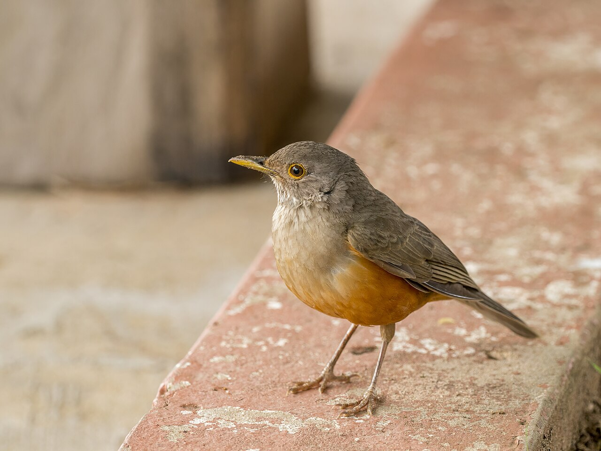
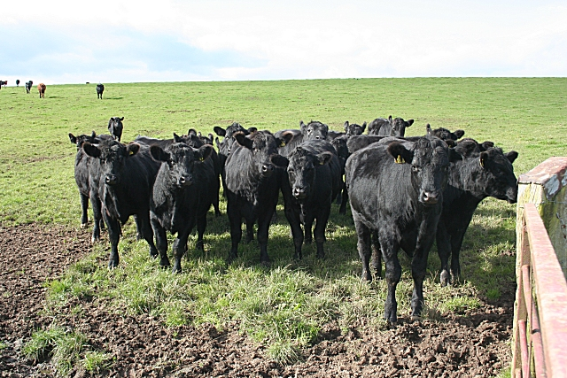
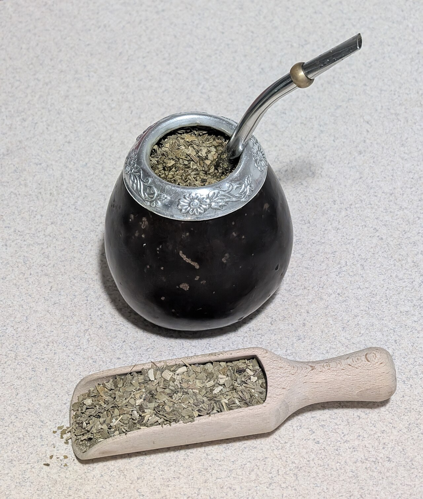
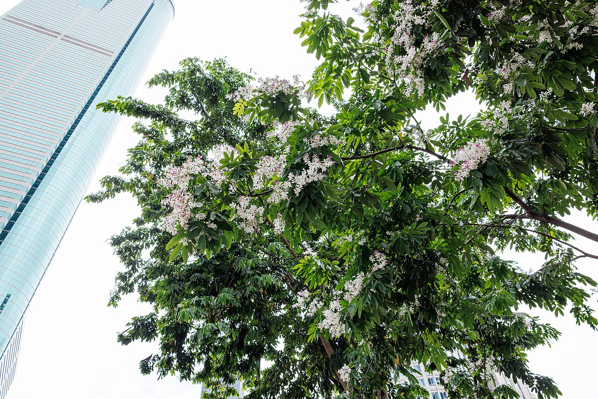
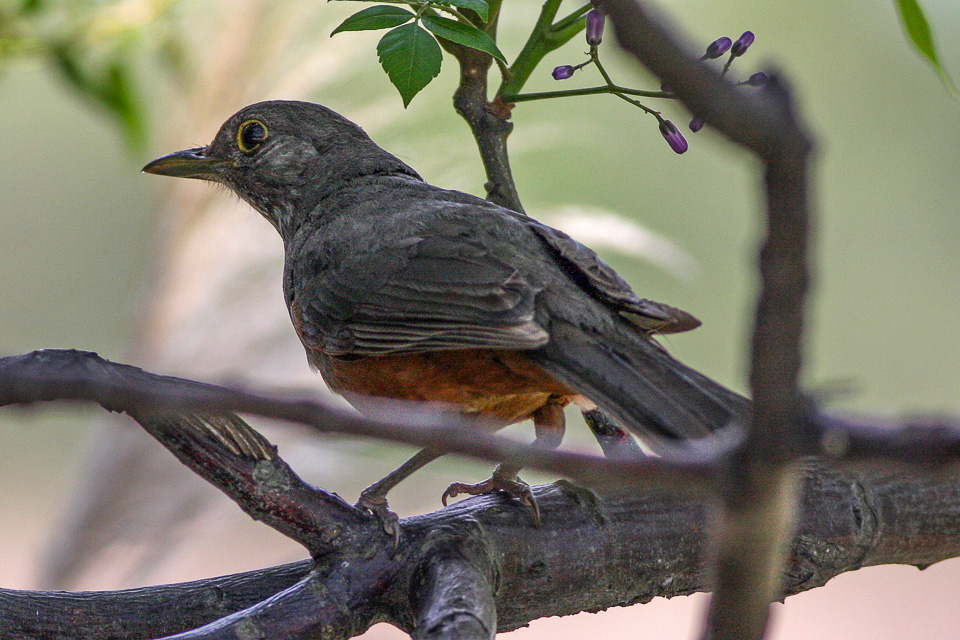
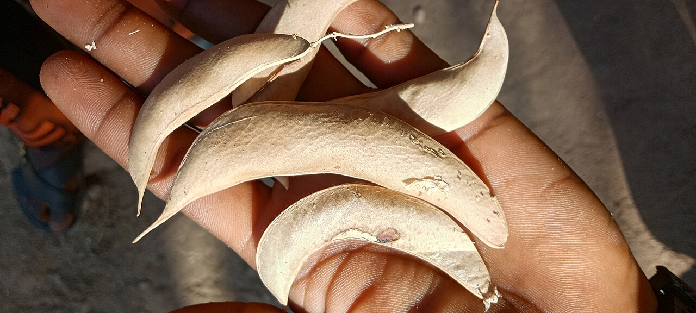
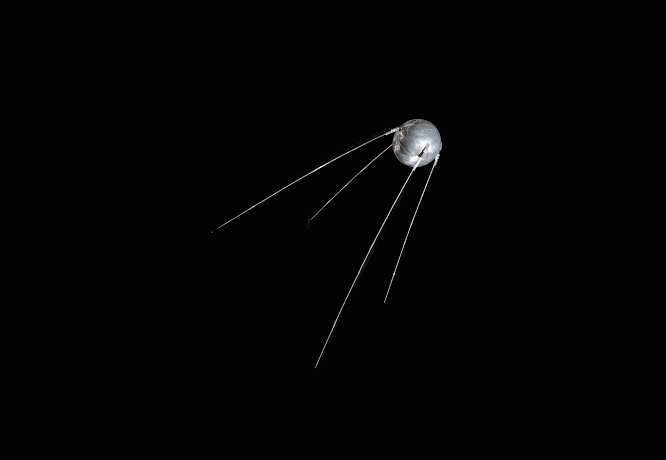
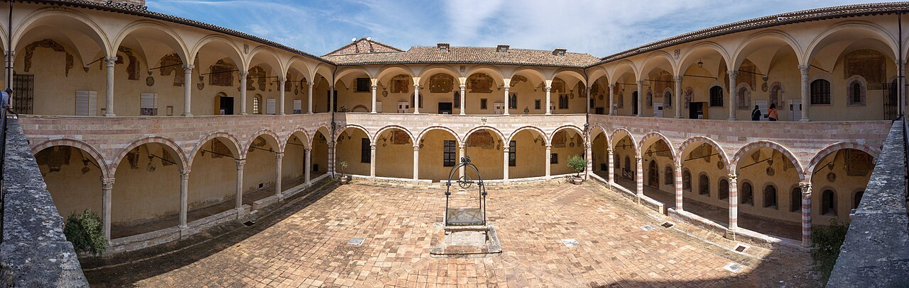

Lula.
diario de la mañana — el mundo, tu ciudad y lo que te asombra

Buen día. Domingo de hockey, así que esta edición está pensada para leerla de a pedazos: a la mañana, en el viaje o a la noche, cuando vuelvas. Trae la semana entera en diez titulares, el repaso completo de francés e inglés, un cuento largo de Oscar Wilde y, como hoy es el Día Mundial de los Animales, más bichos de lo habitual.
- La semana en diez titulares6'
- Ciencia: enzimas de diseño8'
- Mirá a tu alrededor3'
- Receta de estación3'
- El clásico largo: Oscar Wilde12'
- La palabra del día1'
- Repaso de francés de la semana5'
- English corner · weekly review6'
- Hoy en la historia · un lugar2'
- El asombro de la semana2'
- Pasatiempo: sudoku difícil15'
- Cuaderno: quiz de la semana8'
Lo que pasó mientras estudiabas
Brasil vota hoy. Lula (39–40 %) contra Flávio Bolsonaro (34–36 %) en la primera vuelta. Si nadie supera la mitad de los votos válidos, hay balotaje el 25 de octubre, donde las encuestas los muestran empatados. Lo ampliamos en inglés más abajo.
Letonia giró fuerte hacia la Lista Unida. Con el 99,9 % escrutado, el partido conservador de Andris Kulbergs sacó 35 % y unos 42 de los 100 escaños: el doble de lo que daban las encuestas. Atrás quedaron Letonia Primero (11,3 %), los Progresistas (11,1 %) y Poder Soberano (10,8 %).
Marruecos tiene su primera primera ministra: Fatima Ezzahra El Mansouri, abogada de Marrakech, que ahora tiene que armar una coalición.
El Reino Unido mira otra vez a Europa: el primer ministro Andy Burnham dijo que volver a la UE es una opción para las próximas elecciones.
Malvinas: Milei abrió un arbitraje por el proyecto petrolero Sea Lion y le dio dos semanas a Londres. Vence a mediados de octubre.
Tailandia sufrió sus peores inundaciones en quince años: 3,3 millones de afectados y 24 muertos.
Nepal: una avalancha mató a 15 trabajadores en el campamento base del Himlung Himal.
Ormuz: siguen los ataques contra petroleros en medio de la guerra con Irán, que empezó en febrero.
La Selección goleó 7-0 a Burkina Faso en el Monumental (el rival llegó cinco horas antes del partido). El martes 6, a las 20, Messi juega su partido despedida, contra Benín, también en el Monumental: será su partido número 208 con la camiseta argentina.
El papa León XIV vendrá del 8 al 11 de noviembre, con paradas en Buenos Aires, Córdoba y Luján. Este fin de semana, un millón de jóvenes caminó hasta Luján.
Y en ciencia, esta semana Lula te contó…
Péptidos «resucitados» de 160 millones de años contra superbacterias · APOE4 y la transición de pericito a miofibroblasto (Cell) · 103 genomas de murciélagos (Nature) · la célula madre de tendones y ligamentos (Cell) · y en biotec argentina: el trigo HB4, los biosimilares de mAbxience e Inmunova contra el SUH.
Cómo convertir un barril TIM «vacío» en una enzima eficiente en una sola ronda de diseño
El plegamiento barril TIM (ocho láminas β paralelas rodeadas por ocho hélices α, (βα)₈) es el más común entre las enzimas naturales: cerca del 10 % de las enzimas conocidas lo usan, para reacciones muy distintas. Por eso es el sueño del diseño de proteínas: si pudiéramos crear barriles TIM a medida, tendríamos un andamiaje universal para catálisis nueva. Hasta ahora se podían diseñar barriles TIM de novo que se plegaban perfecto, pero eran catalíticamente inertes: eran demasiado pequeños e «ideales» para tener un bolsillo activo.
El grupo de Birte Höcker (Universidad de Bayreuth) y Roberto Chica (Universidad de Ottawa) publicó en Nature Chemical Biology un flujo de trabajo llamado CANVAS: combina métodos computacionales para extender esos barriles TIM mínimos con elementos estructurales nuevos y tallar un sitio activo a medida.
El experimento
- Reacción de prueba: la eliminación de Kemp, la abstracción de un protón de un benzisoxazol que abre el anillo. No existe en la naturaleza, se mide fácil por espectrofotometría y es el «estándar» del diseño de enzimas desde los trabajos del laboratorio de Baker en 2008.
- El sitio activo: hace falta una base catalítica bien ubicada (típicamente un Asp o un Glu) y un bolsillo hidrofóbico que estabilice el estado de transición.
- Resultado: en una sola ronda de diseño, sin evolución dirigida, la enzima KempTIM1 alcanzó una eficiencia catalítica (kcat/KM) unas siete veces mayor que las enzimas comparables de publicaciones recientes.
Lectura crítica
- La eliminación de Kemp es una reacción «fácil» de un solo paso. El desafío real son las reacciones de varios pasos o con cofactores, que es donde los barriles TIM naturales brillan.
- Las enzimas de Kemp naturales evolucionadas en el laboratorio (como HG3.17) llegan a eficiencias muy altas después de muchas rondas de evolución dirigida. Lo valioso acá es arrancar mucho más arriba, con menos rondas.
- Para tu formación: el futuro del diseño es combinar diseño racional o por IA (RFdiffusion, ProteinMPNN) con evolución dirigida. Ninguno de los dos alcanza solo.
Beck J, … Chica RA, Höcker B. «Customizing the structure of minimal TIM barrels to craft efficient de novo enzymes». Nature Chemical Biology (2026). doi:10.1038/s41589-026-02250-w
Biotec en el mundo real · la vacuna antiaftosa argentina


Biogénesis Bagó, con planta en Garín, es uno de los mayores productores mundiales de vacuna contra la fiebre aftosa, la enfermedad del ganado causada por un picornavirus (Aphthovirus) que puede cerrar exportaciones de carne de todo un país.
- Upstream: el virus se multiplica en células BHK-21 adaptadas a crecer en suspensión, en biorreactores de gran escala.
- Inactivación: con etilenimina binaria (BEI), un agente alquilante que daña el ARN viral sin desarmar la cápside: se conservan los epitopes y se elimina la infectividad. La validación de la inactivación es el punto crítico de bioseguridad.
- Downstream y formulación: concentración y purificación de las partículas 146S (las cápsides completas, las más inmunogénicas) y formulación con adyuvante oleoso para lograr una respuesta duradera.
- El desafío biológico: hay siete serotipos sin protección cruzada (O, A, C, SAT1-3, Asia1), así que la vacuna tiene que corresponder a las cepas que circulan en cada región.
- Salidas laborales: bioprocesos de cultivo celular a gran escala, control de calidad, bioseguridad (laboratorios de nivel 3 y 4 de contención) y asuntos regulatorios con SENASA.
Ciencia en la vida cotidiana · Por qué el mate es amargo

La yerba (Ilex paraguariensis) tiene cafeína (la «mateína» es la misma molécula), algo de teobromina, ácidos clorogénicos (polifenoles) y saponinas triterpénicas, que además son las que hacen la espuma del primer mate. El amargor se percibe a través de la familia de receptores TAS2R, unos 25 receptores acoplados a proteína G en la lengua. Hay polimorfismos (como en TAS2R38) que explican por qué a algunas personas el amargo les resulta mucho más intenso.
El agua a 70–80 °C: el agua hirviendo extrae más rápido los compuestos amargos y astringentes y degrada parte de los aromáticos. Por eso el mate «lavado» o quemado sabe peor. Es cinética de extracción, pura y dura.
El paraíso empieza a perfumar y el zorzal canta antes que el sol

.jpg){kind=link}

_(8077535057).jpg){kind=link}
El árbol: paraíso
| Nombre científico | Melia azedarach (Meliáceas) |
|---|---|
| De dónde es | Asia. Es exótico y bastante invasor, pero está en veredas y patios de toda la ciudad. |
| Cómo reconocerlo | Racimos de florcitas lilas en forma de estrella, con perfume dulce, en octubre y noviembre. Hojas bipinnadas. En invierno conserva unos frutitos amarillos redondos. |
| Ojo | Los frutos son tóxicos para las personas (tienen limonoides, las meliatoxinas), pero las aves los comen sin problema. |
El ave: zorzal colorado
| Nombre científico | Turdus rufiventris (Túrdidos, como el mirlo europeo) |
|---|---|
| Cómo reconocerlo | Unos 23 cm, espalda gris parda y vientre anaranjado rojizo. Camina por el pasto y se detiene de golpe, con la cabeza inclinada, para escuchar lombrices. |
| Su canto | Es de los primeros en cantar, todavía de noche, en primavera: frases aflautadas y melodiosas. Si te despertás temprano para el hockey, es probable que sea él. |
Tu misión de hoy
Habas salteadas con huevo, y la historia del favismo
Octubre es temporada de habas frescas. Veinte minutos, ideal para después del partido.

Ingredientes (2 porciones)
- 1 kg de habas en vaina (rinde unos 300 g limpias)
- 2 huevos
- 1 cebolla de verdeo o media cebolla
- Aceite de oliva, sal, pimienta, menta o perejil
- Opcional: unas fetas de jamón crudo
Pasos
- Desgraná las habas. Hervilas 2 minutos, pasalas a agua con hielo y sacales la piel blanca (queda el grano verde intenso).
- Rehogá la cebolla en aceite 5 minutos; sumá las habas y el jamón, 3 minutos más.
- Agregá los huevos batidos y revolvé apenas, hasta que cuajen cremosos.
- Sal, pimienta y hojas de menta.
La química (y la genética) de la receta
El verde: el blanqueado corto inactiva enzimas (como la lipoxigenasa) y expulsa el aire de los tejidos, así la clorofila se ve más intensa. El shock en agua fría frena la cocción antes de que el calor ácido convierta la clorofila en feofitina, que es parda.
El favismo: las habas tienen vicina y convicina, glucósidos que en el intestino se hidrolizan a divicina e isouramilo, compuestos que generan especies reactivas de oxígeno. En personas con deficiencia de glucosa-6-fosfato deshidrogenasa (G6PD), que es la enzimopatía más frecuente del mundo, ligada al cromosoma X, los glóbulos rojos no regeneran suficiente NADPH, el glutatión no se reduce y viene una hemólisis aguda. La deficiencia es frecuente donde hubo malaria, porque protege contra Plasmodium falciparum: un clásico de selección balanceada.
Oscar Wilde, «El príncipe feliz» (1888)
Para el Día de los Animales, un cuento con una golondrina como protagonista. Traducción nuestra del inglés, abreviada; para leer con tiempo.
En lo alto de la ciudad, sobre una columna alta, se levantaba la estatua del Príncipe Feliz. Estaba toda cubierta de finas hojas de oro; tenía por ojos dos zafiros brillantes, y un gran rubí rojo resplandecía en el puño de su espada. Todo el mundo lo admiraba.
Una noche, una golondrina pasó volando sobre la ciudad. Sus amigas se habían ido a Egipto seis semanas antes, pero ella se había quedado atrás, enamorada de un junco. Ahora que estaba sola, se cansó de su amor y decidió irse también. Al llegar a la ciudad buscó dónde dormir, y se acomodó justo entre los pies del Príncipe Feliz.
Cuando estaba por meter la cabeza bajo el ala, le cayó encima una gota grande de agua. «¡Qué raro!», pensó; «no hay una sola nube en el cielo». Y cayó otra gota. Levantó la vista y vio que los ojos del Príncipe Feliz estaban llenos de lágrimas.
«¿Quién sos?», le preguntó. «Soy el Príncipe Feliz». «¿Y por qué llorás?». «Cuando estaba vivo y tenía un corazón humano», contestó la estatua, «no sabía lo que eran las lágrimas, porque vivía en un palacio adonde no podía entrar la tristeza. Ahora que estoy muerto me pusieron aquí arriba, tan alto que puedo ver toda la fealdad y toda la miseria de mi ciudad; y aunque mi corazón es de plomo, no puedo hacer otra cosa que llorar».
«Allá lejos», siguió el Príncipe, «en una calle pequeña, hay una casa pobre. Por una ventana veo a una mujer sentada a una mesa, cosiendo flores de pasionaria en un vestido de satén para la más hermosa de las damas de honor de la Reina. En un rincón, en la cama, está su hijito enfermo. Tiene fiebre y pide naranjas, y su madre no tiene nada para darle más que agua del río. Golondrina, golondrinita, ¿no le llevarías el rubí del puño de mi espada?».
La golondrina tenía que irse a Egipto. Pero el Príncipe la miró con tanta tristeza que se quedó «solo esta noche». Y después otra, y otra más: llevó los zafiros de sus ojos a un joven escritor muerto de frío y a una niña que vendía fósforos, y después, una por una, las hojas de oro que lo cubrían, a los pobres de la ciudad. Llegó el invierno. La golondrina, que ya no quería dejar al Príncipe ciego, se fue quedando cada vez más débil…
«No hay misterio tan grande como la miseria».
Para entrar al texto
- El final (que no te cuento entero): un corazón de plomo partido y una golondrina muerta, que Dios elige como «las dos cosas más preciosas de la ciudad». Wilde escribió estos cuentos para sus hijos, Cyril y Vyvyan, pero son una crítica feroz a la indiferencia de los ricos.
- El contraste con el Wilde que conocés: el de El retrato de Dorian Gray y los aforismos ingeniosos. Acá es tierno, casi religioso.
- Su vida: en 1895 lo condenaron a dos años de trabajos forzados por su homosexualidad. Murió pobre en París, con 46 años. En 2017, el Reino Unido indultó a las miles de personas condenadas por esas leyes.
domingo sustantivo masculino
latín dies dominicus («día del Señor») → dominicus → domingo · francés dimanche · inglés Sunday («día del Sol»)
Los días de la semana en castellano vienen de los astros romanos: lunes (Luna), martes (Marte), miércoles (Mercurio), jueves (Júpiter), viernes (Venus). El sábado viene del hebreo shabbat, el día de descanso, y el domingo es el único que el cristianismo «rebautizó»: el antiguo dies Solis pasó a ser el día del Señor.
El inglés hizo otra cosa: mantuvo el Sol (Sunday) y la Luna (Monday) y reemplazó a los dioses romanos por los germánicos: Tuesday (Tyr), Wednesday (Odín/Woden), Thursday (Thor), Friday (Frigg). Solo sobrevivió Saturno: Saturday.
Bon dimanche !
Todo lo que viste esta semana, junto en un mini diálogo. Leelo en voz alta dos veces.
— Bonjour ! Je m'appelle Lula. Et toi ?
— Enchantée ! Je suis Sofía. Comment ça va ?
— Ça va bien, merci. J'habite à Buenos Aires. Et toi, tu es d'où ?
— Je suis de Córdoba. Aujourd'hui, il fait frais !
— Oui ! Bon dimanche, Sofía. À demain !
Tus 20 palabras de la semana
- bonjour — buen día, hola
- je m'appelle — me llamo
- j'habite à — vivo en
- le matin — a la mañana
- je bois un café — tomo un café
- aujourd'hui — hoy
- il fait frais — está fresco
- comment ça va ? — ¿cómo andás?
- ça va bien — bien
- merci — gracias
- et toi ? — ¿y vos?
- très bien — muy bien
- bonne journée — buen día (al despedirse)
- à demain — hasta mañana
- voici — este es / esta es
- mon amie — mi amiga
- enchantée — encantada
- je suis — soy
- tu es d'où ? — ¿de dónde sos?
- bon dimanche — buen domingo
Desafío: tapá la columna en castellano y decí en voz alta qué significa cada una. Las que no te salgan, escribilas acá:
Próxima semana: los números y la hora (un, deux, trois… Il est quelle heure ?).
Brazil goes to the polls with the region holding its breath
More than 150 million Brazilians are eligible to vote today in a first round that pits the incumbent, Luiz Inácio Lula da Silva, against Flávio Bolsonaro, the eldest son of the former president. The final polls give Lula a lead of four to five points, comfortably outside the margin of error but well short of the outright majority he would need to avoid a run-off on 25 October.
It is in that second round that the race tightens to a dead heat. Datafolha puts Lula at 47 per cent against 45 for his rival, a gap that pollsters themselves caution should be read as a snapshot rather than a forecast. Turnout, especially among younger and poorer voters in the north-east, Lula's heartland, could prove decisive.
For Argentina, the stakes are anything but abstract. Brazil is its largest trading partner and the anchor of Mercosur, and relations between Javier Milei and Lula have been frosty at best. A Bolsonaro victory would hand Buenos Aires an ideological ally in Brasília; a Lula win would prolong an awkward, if pragmatic, coexistence. Either way, the outcome will reverberate well beyond Brazil's borders.
- to pit A against B — enfrentar a A con B
- the incumbent — quien ocupa el cargo
- a run-off — un balotaje
- a dead heat — un empate técnico
- heartland — bastión, territorio propio
- anything but — todo menos
- frosty — frías, tensas (relaciones)
- to reverberate — repercutir
Weekly review · your 16 expressions
a tall order · to hold sway over · to water down · to break the mould · to recede · a throwback to · complacency · run-off (water) · to go to the polls · to unravel · hot on its heels · to tap into · to reshuffle the deck · a dead heat · the incumbent · anything but
Fijate: run-off apareció dos veces esta semana con dos sentidos distintos, el agua de escorrentía (Tailandia) y el balotaje (Brasil).
Your turn (answer in English):
4 de octubre de 1957: el «bip-bip» del Sputnik

La Unión Soviética puso en órbita el Sputnik 1, el primer satélite artificial: una esfera de aluminio de 58 cm y 83,6 kg que daba una vuelta a la Tierra cada 96 minutos y emitía un «bip» por radio que cualquier radioaficionado podía escuchar. Funcionó 21 días con sus baterías y reentró en la atmósfera en enero de 1958.
El impacto fue enorme: Estados Unidos vivió la «crisis del Sputnik», creó la NASA en 1958 y reformó la enseñanza de ciencia en las escuelas. Empezaba la carrera espacial. Hoy hay más de 10.000 satélites activos.
El lugar: Asís, en Italia

| Dónde | Umbría, en el centro de Italia, sobre la ladera del monte Subasio |
|---|---|
| Por qué hoy | El 4 de octubre es el día de San Francisco de Asís (1181/82–1226), patrono de los animales y de la ecología. Por eso, desde 1931, es el Día Mundial de los Animales. |
| La basílica | Patrimonio de la Humanidad, con frescos de Giotto que cuentan la vida del santo, entre ellos la famosa Predicación a los pájaros. |
| Conexión | El papa Francisco eligió su nombre por él. Y su texto más leído, Laudato si' (2015), toma el título del «Cántico de las criaturas» de Francisco de Asís. |
Lo más raro que aprendiste en cuatro días
- Sos más o menos mitad bacteria: unas 38 billones de bacterias contra 30 billones de células humanas.
- Uno de cada cinco mamíferos es un murciélago, y un murciélago de 7 gramos puede vivir más de 40 años.
- Los cisnes negros eran sinónimo de imposible hasta 1697, y en la Argentina tenemos uno de cuello negro.
- El olor a lluvia es el olor de Streptomyces, la fábrica de antibióticos más grande del planeta.
Y uno nuevo para el domingo: en la Tierra caen unos 45 rayos por segundo, cerca de 1.400 millones por año, según los satélites de la NASA. El lugar con más rayos del mundo es el lago de Maracaibo, en Venezuela, con tormentas eléctricas casi todas las noches.
Para el viaje de vuelta
Completá cada fila, cada columna y cada caja de 3×3 con los números del 1 al 9, sin repetir. Tiene una sola solución.
¿Cuánto te quedó de la semana?
¿De qué proteína salían los péptidos «resucitados» del jueves?
APOE4 empuja a los pericitos a convertirse en…
¿Qué marcador es positivo en la célula madre de tendones (TLSC)?
¿Con qué se inactiva el virus de la vacuna antiaftosa?
¿Qué reacción de prueba usaron para KempTIM1?
El favismo ocurre en personas con deficiencia de…
¿Qué árbol florece sin hojas, con copa rosa, a fines del invierno?
¿Quién bailó la primera Odette/Odile en 1895 e introdujo los 32 fouettés?
«À demain» significa…
«A dead heat» es…
Escritura: el balance de tu primera semana con Lula
- Quiz: lactoferrina · miofibroblastos · CD73 · etilenimina binaria · la eliminación de Kemp · G6PD · el lapacho rosado · Pierina Legnani · hasta mañana · un empate técnico.
- English 1: because the gap (47 vs 45) is within the margin of error and turnout can shift it.
Sudoku:
Fuentes de esta edición
- LSM: resultados en Letonia · Inbox: boca de urna
- France 24: encuestas en Brasil
- La Nación: Argentina 7 – Burkina Faso 0 · La Nación: despedida de Messi
- La Nación: pronóstico del 4/10
- Nature Chemical Biology: KempTIM1 · Phys.org
- Día Mundial de los Animales
- Ediciones Nº 1 a 3 de Lula, para el resumen de la semana.
Mañana, lunes: arte y museos, y la semana 2 de francés. Que te vaya lindo en el hockey. — Lula.